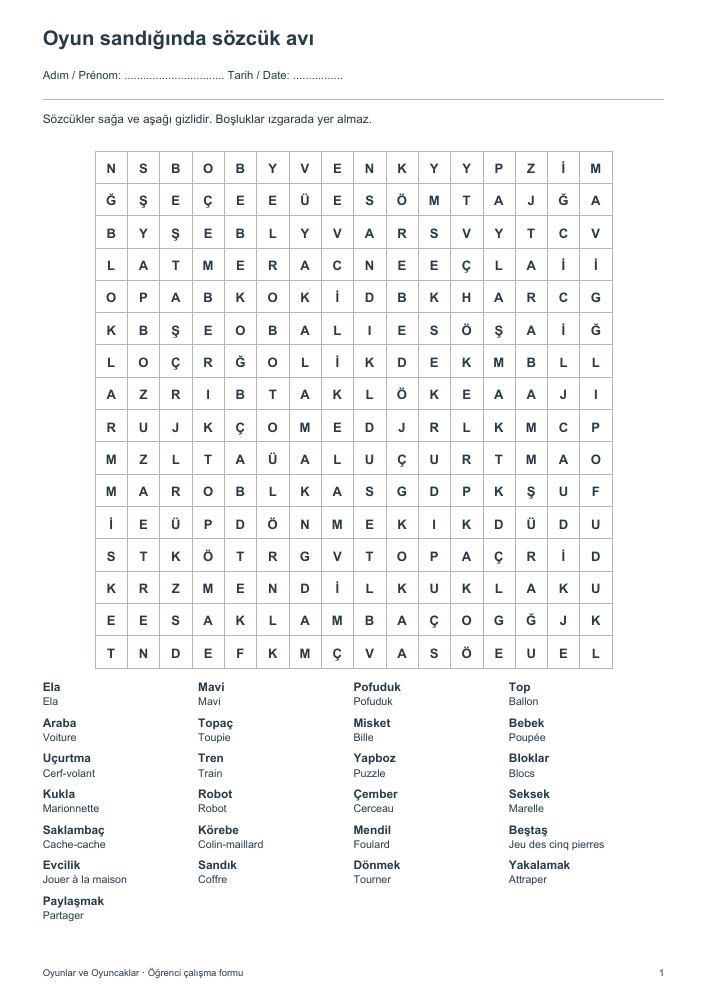

İlk ve son harfe dokun. Sözcükler yalnızca → sağa veya ↓ aşağı gider.
Mavi kuşun, Pofuduk oyuncak ayının adıdır. Bir sözcük bulunca hikâyede nerede geçtiğini anlat. Sözcükler yalnızca sağa veya aşağı yönlüdür.
